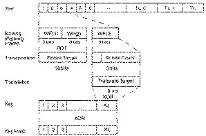
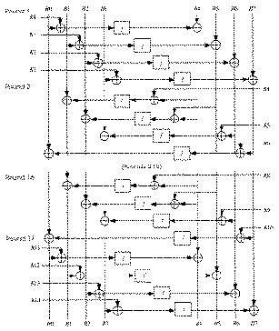
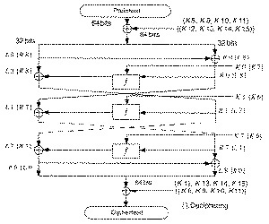
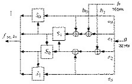
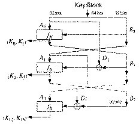
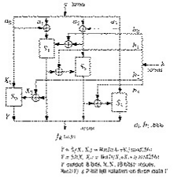
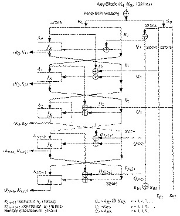
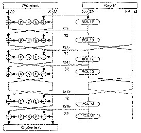
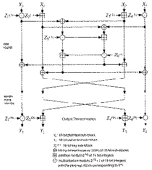
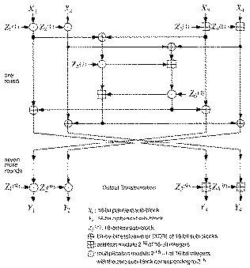

In the late 1960s, led by Horst Feistel and later by Walt Tuchman, IBM initiated a research program in computer cryptography called Lucifer. Lucifer is also the name of a block algorithm that came out of that program in the early 1970s [1482,1484]. In fact, there are at least two different algorithms with that name [552,1492]. And [552] leaves some gaps in the specification of the algorithm. All this has led to more than a little confusion.
Lucifer is a substitution-permutation network, with building blocks similar to DES. In DES, the output of the function f is XORed with the input of the previous round to form the input of the next round. Lucifer’s S-boxes have 4-bit inputs and 4-bit outputs; the input of the S-boxes is the bit-permuted output of the S-boxes of the previous round; the input of the S-boxes of the first round is the plaintext. A key bit is used to choose the actual S-box from two possible S-boxes. (Lucifer represents this as a single T-box with 9 bits in and 8 bits out.) Unlike DES, there is no swapping between rounds and no block halves are used. Lucifer has 16 rounds, 128-bit blocks, and a key schedule simpler than DES.
Using differential cryptanalysis against the first incarnation of Lucifer, Biham and Shamir [170,172] showed that Lucifer, with 32-bit blocks and 8 rounds, can be broken with 40 chosen plaintexts and 229 steps; the same attack can break Lucifer with 128-bit blocks and 8 rounds with 60 chosen plaintexts and 253 steps. Another differential cryptanalytic attack breaks 18-round, 128-bit Lucifer with 24 chosen plaintexts in 221 steps. All of these attacks used the strong DES S-boxes. Using differential cryptanalysis against the second incarnation, they found the S-boxes to be much weaker than DES. Further analysis showed that over half the possible keys are insecure [112]. Related-key cryptanalysis can break 128-bit Lucifer, with any number of rounds, with 233 chosen-key chosen plaintexts, or with 265 chosen-key known plaintexts [158]. The second incarnation of Lucifer is even weaker [170,172,112].
Some people feel that Lucifer is more secure than DES because of the longer key length and lack of published results. This is clearly not the case.
Lucifer is the subject of several U.S. patents: [553,554,555,1483]. They have all expired.
W. E. Madryga proposed this block algorithm in 1984 [999]. It is efficient for software: It has no irritating permutations and all its operations work on bytes.
His design objectives are worth repeating:
DES had already met objectives one through nine, but the next three were new. Assuming that the best way to break the algorithm was through brute force, a variable-length key would surely silence those who thought 56 bits was too low. They could implement this algorithm with any key length they desired. And, for anyone who has ever attempted to implement DES in software, an algorithm that took software implementations into account would be welcomed.
Madryga consists of two nested cycles. The outer cycle repeats eight times (although this could be increased if security warrants) and consists of an application of the inner cycle to the plaintext. The inner cycle transforms plaintext to ciphertext and repeats once for each 8-bit block (byte) of the plaintext. Thus, the algorithm passes through the entire plaintext eight successive times.
An iteration of the inner cycle operates on a 3-byte window of data, called the working frame (see Figure 13.1). This window advances 1 byte for each iteration. (The data are considered circular when dealing with the last 2 bytes.) The first 2 bytes of the working frame are together rotated a variable number of positions, while the last byte is XORed with some key bits. As the working frame advances, all bytes are successively rotated and XORed with key material. Successive rotations overlap the results of a previous XOR and rotation, and data from the XOR is used to influence the rotation. This makes the entire process reversible.

Figure 13.1 One iteration of Madryga.
Because every byte of data influences the 2 bytes to its left and the 1 byte to its right, after eight passes every byte of the ciphertext is dependent on 16 bytes to the left and 8 bytes to the right.
When encrypting, each iteration of the inner cycle starts the working frame at the next-to-last byte of the plaintext and advances circularly through to the third-to-last byte of the plaintext. First, the entire key is XORed with a random constant and then rotated to the left 3 bits. The low-order 3 bits of the low-order byte of the working frame are saved; they will control the rotation of the other 2 bytes. Then, the low-order byte of the working frame is XORed with the low-order byte of the key. Next, the concatenation of the 2 high-order bytes are rotated to the left the variable number of bits (0 to 7). Finally, the working frame is shifted to the right 1 byte and the whole process repeats.
The point of the random constant is to turn the key into a pseudo-random
sequence. The length of this constant must be equal to the length of the key
and must be the same for everyone who wishes to communicate with one
another. For a 64-bit key, Madryga recommends the constant
0x0f1e2d3c4b5a6978.
Decryption reverses this process. Each iteration of the inner cycle starts the working frame at the third-to-last byte of the ciphertext and advances in the reverse direction circularly through to the second-to-last byte of the ciphertext. Both the key and the 2 ciphertext bytes are shifted to the right. And the XOR is done before the rotations.
Researchers at Queensland University of Technology [675] examined Madryga, along with several other block ciphers. They observed that the algorithm didn’t exhibit the plaintext-ciphertext avalanche effect. Additionally, many ciphertexts had a higher percentage of ones than zeros.
Although I know of no formal analysis of the algorithm, it doesn’t look terribly secure. A cursory review by Eli Biham led to the following observations [160]:
The algorithm consists only of linear operations (rotations and
XOR), which are slightly modified depending on the data.
There is nothing like the strength of DES’s S-boxes.
The parity of all the bits of the plaintext and the ciphertext is a
constant, depending only on the key. So, if you have one plaintext
and its corresponding ciphertext, you can predict the parity of the
ciphertext for any plaintext.
None of this is damning in itself, but it doesn’t leave me with a good feeling about the algorithm. I do not recommend Madryga.
NewDES was designed in 1985 by Robert Scott as a possible DES replacement [1405,364]. The algorithm is not a DES variant, as its name might imply. It operates on 64-bit blocks of plaintext, but it has a 120-bit key. NewDES is simpler than DES, with no initial or final permutations. All operations are on entire bytes. (Actually, NewDES isn’t anything like a new version of DES; the name is unfortunate.)
The plaintext block is divided into eight 1-byte sub-blocks: B0, B1, ..., B6, B7. Then the sub-blocks go through 17 rounds. Each round has eight steps. In each step, one of the sub-blocks is XORed with some key material (there is one exception), substituted with another byte via an f function, and then XORed with another sub-block to become that sub-block. The 120-bit key is divided into 15 key sub-blocks: K0, K1, ..., K13, K14. The process is easier to understand visually than to describe. Figure 13.2 shows the NewDES encryption algorithm.

Figure 13.2 NewDES.
The f-function is derived from the Declaration of Independence. See [1405] for details.
Scott showed that every bit of the plaintext block affects every bit of the ciphertext block after only 7 rounds. He also analyzed the f function and found no obvious problems. NewDES has the same complementation property that DES has [364]: If EK(P) = C, then EK´(P´) = C´. This reduces the work required for a brute-force attack from 2120 steps to 2119 steps. Biham noticed that any change of a full byte, applied to all the key and data bytes, leads to another complementation property [160]. This reduces a brute-force attack further to 2112 steps.
This is not damning, but Biham’s related-key cryptanalytic attack can break NewDES with 233 chosen-key chosen-plaintexts in 248 steps [160]. While this attack is time-consuming and largely theoretical, it shows that NewDES is weaker than DES.
FEAL was designed by Akihiro Shimizu and Shoji Miyaguchi from NTT Japan [1435]. It uses a 64-bit block and a 64-bit key. The idea was to make a DES-like algorithm with a stronger round function. Needing fewer rounds, the algorithm would run faster. Unfortunately, reality fell far short of the design goals.
Figure 13.3 is a block diagram of one round of FEAL. The encryption process starts with a 64-bit block of plaintext. First, the data block is XORed with 64 key bits. The data block is then split into a left half and a right half. The left half is XORed with the right half to form a new right half. The left and new right halves go through n rounds (four, initially). In each round the right half is combined with 16 bits of key material (using function f) and XORed with the left half to form the new right half. The original right half (before the round) forms the new left half. After n rounds (remember not to switch the left and right halves after the n th round) the left half is again XORed with the right half to form a new right half, and then the left and right halves are concatenated together to form a 64-bit whole. The data block is XORed with another 64 bits of key material, and the algorithm terminates.

Figure 13.3 One round of FEAL.
Function f takes the 32 bits of data and 16 bits of key material and mixes them together. First the data block is broken up into 8-bit chunks, then the chunks are XORed and substituted with each other. Figure 13.4 is a block diagram of function f. The two functions S0 and S1, are defined as:
S0(a,b) = rotate left two bits ((a + b) mod 256) S1(a,b) = rotate left two bits ((a + b + 1) mod 256)

Figure 13.4 Function f.
The same algorithm can be used for decryption. The only difference is: When decrypting, the key material must be used in the reverse order.
Figure 13.5 is a block diagram of the key-generating function. First the 64-bit key is divided into two halves. The halves are XORed and operated on by function fk, as indicated in the diagram. Figure 13.6 is a block diagram of function fk. The two 32-bit inputs are broken up into 8-bit blocks and combined and substituted as shown. S0 and S1 are defined as just shown. The 16-bit key blocks are then used in the encryption/decryption algorithm.

Figure 13.5 Key processing part of FEAL.

Figure 13.6 Function fK.
On a 10 megahertz 80286 microprocessor, an assembly-language implementation of FEAL-32 can encrypt data at a speed of 220 kilobits per second. FEAL-64 can encrypt data at a speed of 120 kilobits per second [1104].
FEAL-4, FEAL with four rounds, was successfully cryptanalyzed with a chosen-plaintext attack in [201] and later demolished [1132]. This later attack, by Sean Murphy, was the first published differential-cryptanalysis attack and required only 20 chosen plaintexts. The designers retaliated with 8-round FEAL [1436,1437,1108] which Biham and Shamir cryptanalyzed at the SECURICOM ’89 conference[1427]. Another chosen-plaintext attack, using only 10,000 blocks, against FEAL-8 [610] forced the designers to throw up their hands and define FEAL-N [1102,1104], with a variable number of rounds (greater than 8, of course).
Biham and Shamir used differential cryptanalysis against FEAL-N; they could break it more quickly than by brute force (with fewer than 264 chosen plaintext encryptions) for N less than 32 [169]. FEAL-16 required 228 chosen plaintexts or 246.5 known plaintexts to break. FEAL-8 required 2000 chosen plaintexts or 237.5 known plaintexts to break. FEAL-4 could be broken with just eight carefully selected chosen plaintexts.
The FEAL designers also defined FEAL-NX, a modification of FEAL, that accepts 128-bit keys (see Figure 13.7)[1103,1104]. Biham and Shamir showed that FEAL-NX with a 128-bit key is just as easy to break as FEAL-N with a 64-bit key, for any value of N [169]. Recently FEAL-N(X)S has been proposed, which strengthens FEAL with a dynamic swapping function [1525].

Figure 13.7 FEAL-NX key schedule.
There’s more. Another attack against FEAL-4, requiring only 1000 known plaintexts, and against FEAL-8, requiring only 20,000 known plaintexts, was published in [1520]. Other attacks are in [1549,1550]. The best attack is by Mitsuru Matsui and Atshuiro Yamagishi [1020]. This is the first use of linear cryptanalysis, and can break FEAL-4 with 5 known plaintexts, FEAL-6 with 100 known plaintexts and FEAL-8 with 215 known plaintexts. Further refinements are in [64]. Differential-linear cryptanalysis can break FEAL-8 with only 12 chosen plaintexts [62]. Whenever someone discovers a new cryptanalytic attack, he always seems to try it out on FEAL first.
FEAL is patented in the United States [1438] and has patents pending in
England, France, and Germany. Anyone wishing to license the algorithm
should contact the Intellectual Property Department, NTT, 1-6
Uchisaiwai-cho, 1-chome, Chiyoda-ku, 100 Japan.
REDOC II is another block algorithm, designed by Michael Wood for Cryptech, Inc. [1613,400]. It has a 20-byte (160-bit) key and an 80-bit block.
REDOC II performs all of its manipulations — permutations, substitutions, and key XORs — on bytes; the algorithm is efficient in software. REDOC II uses variable function tables. Unlike DES, which has a fixed (albeit optimized for security) set of permutation and substitution tables, REDOC II uses a key-dependent and plaintext-dependent set of tables (S-boxes, actually). REDOC II has 10 rounds; each round is a complicated series of manipulations on the block.
Another unique feature in the design is the use of masks. These are numbers derived from the key table that are used to select the tables in a given function within a given round. Both the value of the data and the masks are used together to select the function tables.
Assuming that brute force is the most efficient means of attack, REDOC II is very secure: 2160 operations are required to recover the key. Thomas Cusick cryptanalyzed 1 round of REDOC II, but he was unable to extend the attack to multiple rounds [400]. Using differential cryptanalysis, Biham and Shamir were able to successfully cryptanalyze 1 round of REDOC II with 2300 chosen-plaintexts [170]. This attack cannot be extended to multiple rounds, but they were able to obtain three mask values after 4 rounds. I know of no other cryptanalysis.
REDOC III is a streamlined version of REDOC II, also designed by Michael Wood [1615]. It operates on an 80-bit block. The key length is variable and can be as large as 2560 bytes (20,480 bits). The algorithm consists solely of XORing key bytes with message bytes; there are no permutations or substitutions.
The algorithm is easy and fast. On a 33 megahertz 80386, the algorithm encrypts data at 2.75 megabits per second. Wood estimates that a VLSI-pipelined design, with a 64-bit data path, woud encrypt data at over 1.28 gigabits per second with a 20 megahertz clock.
REDOC III is not secure [1440]. It is vulnerable to differential cryptanalysis. Only about 223 chosen plaintexts are required to reconstruct both masks.
Both REDOC versions are patented in the United States [1614]. Foreign patents
are pending. Anyone interested in licensing either REDOC II or REDOC III
should contact Michael C. Wood, Delta Computec, Inc., 6647 Old Thompson
Rd., Syracuse, NY 13211.
LOKI is Australian and was first presented in 1990 as a potential alternative to DES [273]. It uses a 64-bit block and a 64-bit key. The general structure of the algorithm and key schedule were based on [274,275], and the design of the S-boxes was based on [1247].
Using differential cryptanalysis, Biham and Shamir were able to break LOKI with 11 or fewer rounds faster than by brute force [170]. Furthermore, there is an 8-bit complementation property, which reduces the complexity of a brute-force attack by a factor of 256 [170,916,917].
Lars Knudsen showed that LOKI, with 14 rounds or fewer, is vulnerable to differential cryptanalysis [852,853]. Additionally, if LOKI is implemented with alternate S-boxes, the resulting cipher will probably be vulnerable to differential cryptanalysis.
In response to these attacks, LOKI’s designers went back to the drawing board and revised their algorithm. The result is LOKI91 [272]. (The previous version of LOKI was renamed LOKI89.)
To make the algorithm more resistant to differential cryptanalysis and to remove the complementation property, the following changes were made to the original design:
Description of LOKI91
The mechanics of LOKI91 are similar to DES (see Figure 13.8). The data block is then divided into a left half and a right half and goes through 16 rounds, much like DES. In each round, the right half is first XORed with a piece of the key, then sent through an expansion permutation (see Table 13.1).

Figure 13.8 LOKI91.
| 4 | 3 | 2 | 1 | 32 | 31 | 20 | 29 | 28 | 27 | 26 | 25 |
| 28 | 27 | 26 | 25 | 24 | 23 | 22 | 21 | 20 | 19 | 18 | 17 |
| 20 | 19 | 18 | 17 | 16 | 15 | 14 | 13 | 12 | 11 | 10 | 9 |
| 12 | 11 | 10 | 9 | 8 | 7 | 6 | 5 | 4 | 3 | 2 | 1 |
The 48-bit output is divided into four 12-bit blocks, and each block is sent through an S-box substitution. The S-box substitution is as follows: Take each 12-bit input; use the 2 left-most bits and the 2 right-most bits to form the number r, and the 8 innermost bits and form the number c. The output of the S-box, O, is as follows:
O(r,c) = (c + ((r*17) ⊕ 0xff) & 0xff)31 mod Pr
Pr is given in Table 13.2.
| r: | 1 | 2 | 3 | 4 | 5 | 6 | 7 | 8 | 9 | 10 | 11 | 12 | 13 | 14 | 15 | 16 |
| Pr: | 375 | 379 | 391 | 395 | 397 | 415 | 419 | 425 | 433 | 445 | 451 | 463 | 471 | 477 | 487 | 499 |
Then, the four 8-bit outputs are recombined to form a single 32-bit number and sent through the permutation described in Table 13.3. Finally, the right half is XORed with the left half to become the new left half, and the left half becomes the new right half. After 16 rounds, the block is again XORed with the key to produce the ciphertext.
| 32 | 24 | 16 | 8 | 31 | 23 | 15 | 7 | 30 | 22 | 14 | 6 | 29 | 21 | 13 | 5 |
| 28 | 20 | 12 | 4 | 27 | 19 | 11 | 3 | 26 | 18 | 10 | 2 | 25 | 17 | 9 | 1 |
The subkeys are generated from the key in a straightforward manner. The 64-bit key is split into a left half and a right half. In each round, the subkey is the left half. This left half is then rotated 12 or 13 bits to the left, and then every two rounds the left and right halves are exchanged. As with DES, the same algorithm can be used for both encryption and decryption, with some modification in how the subkeys are used.
Knudsen attempted to cryptanalyze LOKI91 [854,858], but found it secure against differential cryptanalysis. However, he found a related-key chosen-plaintext attack that reduces the complexity of a brute-force search by almost a factor of four. This attack exploits a weakness in the key schedule and may also apply if the algorithm is used as a one-way hash function (see Section 18.11).
Another attack on related keys can break LOKI91 with 232 chosen-key chosen plaintexts, or 248 chosen-key known plaintexts [158]. The attack is independent of the number of rounds of the algorithm. (In the same paper, Biham breaks LOKI89 with 217 chosen-key chosen plaintexts or 233 known-key known plaintexts using related-key cryptanalysis.) It’s easy to make LOKI91 resistant to this attack; avoid the simple key schedule.
LOKI is not patented. Anyone can implement the algorithm and use it. The
source code implementation in this book is copyrighted by the University of
New South Wales. Anyone interested in using this implementation (or their
other implementation, which is several orders of magnitude faster) in a
commercial product should contact Director CITRAD, Department of
Computer Science, University College, UNSW, Australian Defense Force
Academy, Canberra ACT 2600, Australia; FAX: +61 6 268 8581.
In 1990 Ralph Merkle proposed two algorithms. The basic design principles behind them are [1071]:
To this list, Merkle would probably now add “resistant to differential cryptanalysis and to linear attacks, ” but those attacks were still unknown at the time.
Khufu is a 64-bit block cipher. The 64-bit plaintext is first divided into two 32-bit halves, L and R. First, both halves are XORed with some key material. Then, they are subjected to a series of rounds similar to DES. In each round, the least significant byte of Lis used as the input to an S-box. Each S-box has 8 input bits and 32 output bits. The selected 32-bit entry in the S-box is then XORed with R. Lis then rotated some multiple of 8 bits, L and R are swapped, and the round ends. The S-box itself is not static, but changes every 8 rounds. Finally, after the last round, L and R are XORed with more key material, and then combined to form the ciphertext block.
Although parts of the key are XORed with the encryption block at the beginning and end of the algorithm, the primary purpose of the key is to generate the S-boxes. These S-boxes are secret and, in essence, part of the key. Khufu calls for a total key size of 512 bits (64 bytes) and gives an algorithm for generating S-boxes from the key. The number of rounds for the algorithm is left open. Merkle mentioned that 8-round Khufu is susceptible to a chosen-plaintext attack and recommended 16, 24, or 32 rounds [1071]. (He restricted the choice of rounds to a multiple of eight.)
Because Khufu has key-dependent and secret S-boxes, it is resistant to differential cryptanalysis. There is a differential attack against 16-round Khufu that recovers the key after 231 chosen plaintexts [611], but it cannot be extended to more rounds. If brute-force is the best way to attack Khufu, it is impressively secure. A 512-bit key gives a complexity of 2512 — inconceivable under any circumstances.
Khafre is the second of two cryptosystems proposed by Merkle [1071]. (Khufu and Khafre are names of Egyptian pharaohs.) It is similar in design to Khufu, except that it was designed for applications without precomputation time. The S-boxes are not key-dependent. Instead, Khafre uses fixed S-boxes. And the key is XORed with the encryption block not only before the first round and after the last round, but also after every 8 rounds of encryption.
Merkle speculated that key sizes of 64- or 128-bits would be used for Khafre and that more rounds of encryption would be required for Khafre than for Khufu. This, combined with the fact that each round of Khafre is more complex than for Khufu, makes Khafre slower. In compensation, Khafre does not require any precomputation and will encrypt small amounts of data more quickly.
In 1990 Biham and Shamir turned their differential cryptanalysis techniques against Khafre [170]. They were able to break 16-round Khafre with a chosen-plaintext attack using about 1500 different encryptions. It took about an hour, using their personal computer. Converting that to a known-plaintext attack would require about 238 encryptions. Khafre with 24 rounds can be broken by a chosen-plaintext attack using 253 encryptions, and a known-plaintext attack using 259 encryptions.
Both Khufu and Khafre are patented [1072]. Source code for the algorithms
are in the patent. Anyone interested in licensing either or both algorithms
should contact Director of Licensing, Xerox Corporation, P.O. Box 1600,
Stamford, CT, 06904-1600.
RC2 is a variable-key-size encryption algorithm designed by Ron Rivest for RSA Data Security, Inc. (RSADSI). Apparently, “RC” stands for “Ron’s Code, ” although it officially stands for “Rivest Cipher.” (RC3 was broken at RSADSI during development; RC1 never got further than Rivest’s notebook.) It is proprietary, and its details have not been published. Don’t think for a minute that this helps security. RC2 has already appeared in commercial products. As far as I know, RC2 has not been patented and is only protected as a trade secret.
RC2 is a variable-key-size 64-bit block cipher, designed to be a replacement for DES. According to the company, software implementations of RC2 are three times faster than DES. The algorithm accepts a variable-length key, from 0 bytes to the maximum string length the computer system supports; encryption speed is independent of key size. This key is preprocessed to yield a key-dependent table of 128 bytes. So the number of effectively different keys is 21024. RC2 has no S-boxes [805]; the two operations are “mix” and “mash, ” and one is chosen in each round. According to their literature [1334]:
... RC2 is not an iterative block cipher. This suggests that RC2 offers more protection against differential and linear cryptanalysis than other block ciphers which have relied for their security on copying the design of DES.
RSADSI’s refusal to make RC2 public casts doubt on their claims. They are willing to provide details of the algorithm to most anyone willing to sign a nondisclosure agreement, and have claimed to allow cryptanalysts to publish any negative results they find. I don’t know of any cryptanalyst outside the employ of the company who studied it, since it would amount to doing their analysis work for them.
Still, Ron Rivest is not the usual snake-oil peddler. He’s a respected and competent cryptographer. I would put a fair degree of trust in the algorithm, even though I haven’t personally inspected the code. RC4, once the proprietary intellectual property of RSADSI, was posted to the Internet (see Section 17.1), and it’s probably just a matter of time before RC2 is posted as well.
An agreement between the Software Publishers Association (SPA) and the U.S. government gave RC2 and RC4 (see Section 17.1) special export status (see Section 25.14). Products that implement one of these two algorithms have a much simpler export approval process, provided that the keys are no more than 40 bits long.
Is a 40-bit key enough? There are a total of one trillion possible keys. Assuming that brute force is the most efficient method of cryptanalysis (a big assumption, considering that the algorithm has never been published), and assuming that a brute-force cryptanalysis chip can test one million keys per second, it will take him 12.7 days to find the correct key. One thousand machines working in parallel can produce the key in twenty minutes.
RSA Data Security, Inc., maintains that while encryption and decryption are quick, exhaustive key search is not. A significant amount of time is spent setting up the key schedule. While this time is negligible when encrypting and decrypting messages, it is not when trying every possible key.
The U.S. government would never allow export of any algorithm it couldn’t, at least in theory, break. They could create a magnetic tape or CD of a specific plaintext block encrypted with every possible key. To break a given message, they could just run the tape and compare the ciphertext blocks in the message with the ciphertext blocks on the tape. If there is a match, they could try the candidate key and see if the message makes any sense. If they choose a common plaintext block (all zeros, the ASCII characters for a space, etc.), this method should work. The storage requirement for a 64-bit plaintext block encrypted with all 1012 possible keys is 8 terabytes — certainly possible.
For information on licensing RC2, contact RSADSI (see Section 25.4).
The first incarnation of the IDEA cipher, by Xuejia Lai and James Massey, surfaced in 1990 [929]. It was called PES (Proposed Encryption Standard). The next year, after Biham and Shamir’s demonstrated differential cryptanalysis, the authors strengthened their cipher against the attack and called the new algorithm IPES (Improved Proposed Encryption Standard) [931,924]. IPES changed its name to IDEA (International Data Encryption Algorithm) in 1992 [925].
IDEA is based on some impressive theoretical foundations and, although cryptanalysis has made some progress against reduced-round variants, the algorithm still seems strong. In my opinion, it is the best and most secure block algorithm available to the public at this time.
The future of IDEA is not yet clear. There has been no rush to adopt it as a replacement to DES, partly because it is patented and must be licensed for commercial applications, and partly because people are still waiting to see how well the algorithm fares during the coming years of cryptanalysis. Its current claim to fame is that it is part of PGP (see Section 24.12).
IDEA is a block cipher; it operates on 64-bit plaintext blocks. The key is 128 bits long. The same algorithm is used for both encryption and decryption.
As with all the other block ciphers we’ve seen, IDEA uses both confusion and diffusion. The design philosophy behind the algorithm is one of “mixing operations from different algebraic groups.” Three algebraic groups are being mixed, and they are all easily implemented in both hardware and software:
All these operations (and these are the only operations in the algorithm — there are no bit-level permutations) operate on 16-bit sub-blocks. This algorithm is even efficient on 16-bit processors.
Figure 13.9 is an overview of IDEA. The 64-bit data block is divided into four 16-bit sub-blocks: X1, X2, X3, and X4. These four sub-blocks become the input to the first round of the algorithm. There are eight rounds total. In each round the four sub-blocks are XORed, added, and multiplied with one another and with six 16-bit subkeys. Between rounds, the second and third sub-blocks are swapped. Finally, the four sub-blocks are combined with four subkeys in an output transformation.

Figure 13.9 IDEA.
In each round, the sequence of events is as follows:
The output of the round is the four sub-blocks that are the results of steps (11), (12), (13), and (14). Swap the two inner blocks (except for the last round) and that’s the input to the next round.
After the eighth round, there is a final output transformation:
Finally, the four sub-blocks are reattached to produce the ciphertext.
Creating the subkeys is also easy. The algorithm uses 52 of them (six for each of the eight rounds and four more for the output transformation). First, the 128-bit key is divided into eight 16-bit subkeys. These are the first eight subkeys for the algorithm (the six for the first round, and the first two for the second round). Then, the key is rotated 25 bits to the left and again divided into eight subkeys. The first four are used in round 2; the last four are used in round 3. The key is rotated another 25 bits to the left for the next eight subkeys, and so on until the end of the algorithm.
Decryption is exactly the same, except that the subkeys are reversed and slightly different. The decryption subkeys are either the additive or multiplicative inverses of the encryption subkeys. (For the purposes of IDEA, the all-zero sub-block is considered to represent 216 = - 1 for multiplication modulo 216 + 1; thus the multiplicative inverse of 0 is 0.) Calculating these takes some doing, but you only have to do it once for each decryption key. Table 13.4 shows the encryption subkeys and the corresponding decryption subkeys.
| Round | Encryption Subkeys | Decryption Subkeys |
|---|---|---|
| 1st | Z1(1) Z2(1) Z3(1) Z4(1) Z5(1) Z6(1) | Z1(9)-1 -Z2(9) -Z3(9) Z4(9)-1 Z5(8) Z6(8) |
| 2nd | Z1(2) Z2(2) Z3(2) Z4(2) Z5(2) Z6(2) | Z1(8)-1 -Z3(8) -Z2(8) Z4(7)-1 Z5(7) Z6(7) |
| 3rd | Z1(3) Z2(3) Z3(3) Z4(3) Z5(3) Z6(3) | Z1(7)-1 -Z3(7) -Z2(7) Z4(7)-1 Z5(6) Z6(6) |
| 4th | Z1(4) Z2(4) Z3(4) Z4(4) Z5(4) Z6(4) | Z1(6)-1 -Z3(6) -Z2(6) Z4(6)-1 Z5(5) Z6(5) |
| 5th | Z1(5) Z2(5) Z3(5) Z4(5) Z5(5) Z6(5) | Z1(5)-1 -Z3(5) -Z2(5) Z4(5)-1 Z5(4) Z6(4) |
| 6th | Z1(6) Z2(6) Z3(6) Z4(6) Z5(6) Z6(6) | Z1(4)-1 -Z3(4) -Z2(4) Z4(4)-1 Z5(3) Z6(3) |
| 7th | Z1(7) Z2(7) Z3(7) Z4(7) Z5(7) Z6(7) | Z1(3)-1 -Z3(3) -Z2(3) Z4(3)-1 Z5(2) Z6(2) |
| 8th | Z1(8) Z2(8) Z3(8) Z4(8) Z5(8) Z6(8) | Z1(2)-1 -Z3(2) -Z2(2) Z4(2)-1 Z5(1) Z6(1) |
| output transformation | Z1(9) Z2(9) Z3(9) Z4(9) | Z1(1)-1 -Z2(1) -Z3(1) Z4(1)-1 |
Current software implementations of IDEA are about twice as fast as DES. IDEA on a 33 megahertz 386 machine encrypts data at 880 kilobits per second, and 2400 kilobits per second on a 66 megahertz 486 machine. You might think IDEA should be faster, but multiplications aren’t cheap. To multiply two 32-bit numbers on a 486 requires 40 clock cycles (10 on a Pentium).
A VLSI implementation of PES encrypts data at 55 megabits per second at 25 megahertz [208,398]. Another VLSI chip developed at ETH Zurich, consisting of 251,000 transistors on a chip 107.8 square millimeters, encrypts data using the IDEA algorithm at a 177 megabit-per-second data rate when clocked at 25 megahertz [926,207,397].
IDEA’s key length is 128 bits — over twice as long as DES. Assuming that a brute-force attack is the most efficient, it would require 2128(1038) encryptions to recover the key. Design a chip that can test a billion keys per second and throw a billion of them at the problem, and it will still take 1013 years — that’s longer than the age of the universe. An array of 1024 such chips can find the key in a day, but there aren’t enough silicon atoms in the universe to build such a machine. Now we’re getting somewhere — although I’d keep my eye on the dark matter debate.
Perhaps brute force isn’t the best way to attack IDEA. The algorithm is still too new for any definitive cryptanalytic results. The designers have done their best to make the algorithm immune to differential cryptanalysis; they defined the concept of a Markov cipher and showed that resistance to differential cryptanalysis can be modeled and quantified [931,925]. (Figure 13.10 shows the original PES algorithm to be contrasted with the IDEA algorithm of Figure 13.9 which was strengthened against differential cryptanalysis. It’s amazing how a few subtle changes can make such a big difference.) In [925], Lai argued (he gave evidence, not a proof) that IDEA is immune to differential cryptanalysis after only 4 of its 8 rounds. According to Biham, his related-key cryptanalytic attack doesn’t work against IDEA, either [160].

Figure 13.10 PES.
Willi Meier examined the three algebraic operations of IDEA, and pointed out that while they are incompatible, there are instances where they can be simplified in such a way as to facilitate cryptanalysis some percentage of the time [1050]. His attack is more efficient than brute-force for 2-round IDEA (242 operations), but less efficient for 3-round IDEA or higher. Normal IDEA, with 8 rounds, is safe.
Joan Daemen discovered a class of weak keys for IDEA [406,409]. These are not weak keys in the sense of the DES weak keys; that is, the encryption function is self-inverse. They are weak in the sense that if they are used, an attacker can easily identify them in a chosen-plaintext attack. For example, a weak key is (in hex):
0000, 0000, 0x00, 0000, 0000, 000x, xxxx, x000
The number at the positions of “x” can be any number. If this key is used, the bit-wise XOR of certain plaintext pairs guarantees the bit-wise XOR of the resultant ciphertext pairs.
In any case, the chance of accidentally generating one of these weak keys is
very small: one in 296. There is no danger if you choose keys at random. And
it is easy to modify IDEA so that it doesn’t have any weak keys: XOR every
subkey with the value 0x0dae [409].
I know of no other cryptanalytic results against IDEA, although many people have tried.
IDEA can work within any block cipher mode discussed in Chapter 9. Any double-IDEA implementation would be susceptible to the same meet-in-the-middle attack as DES (see Section 15.1). However, because IDEA’s key length is more than double DES’s, the attack is impractical. It would require a storage space of 64*2128 bits, or 1039 bytes. Maybe there’s enough matter in the universe to create a memory device that large, but I doubt it.
If you’re worried about parallel universes as well, use a triple-IDEA implementation (see Section 15.2):
C = EK3(DK2(EK1(P)))
It is immune to the meet-in-the-middle attack.
There’s also no reason why you can’t implement IDEA with independent subkeys, especially if you have key-management tools to handle the longer key. IDEA needs a total of 52 16-bit keys, for a total key length of 832 bits. This variant is definitely more secure, but no one knows by how much.
A naïve variation might double the block size. The algorithm would work just as well with 32-bit sub-blocks instead of 16-bit sub-blocks, and a 256-bit key. Encryption would be quicker and security would increase 232 times. Or would it? The theory behind the algorithm hinges on the fact that 216 + 1 is prime; 232 + 1 is not. Perhaps the algorithm could be modified to work, but it would have very different security properties. Lai says it would be difficult to make it work [926].
While IDEA appears to be significantly more secure than DES, it isn’t always easy to substitute one for the other in an existing application. If your database and message templates are hardwired to accept a 64-bit key, it may be impossible to implement IDEA’s 128-bit key.
For those applications, generate a 128-bit key by concatenating the 64-bit key with itself. Remember that IDEA is weakened considerably by this modification.
If you are more concerned with speed than security, you might consider a variant of IDEA with fewer rounds. Currently the best attack against IDEA is faster than brute force only for 2.5 rounds or less [1050]; 4 round IDEA would be twice as fast and, as far as I know, just as secure.
IDEA is a relatively new algorithm, and many questions remain. Is IDEA a group? (Lai thinks not [926].) Are there any still-undiscovered ways of breaking this cipher? IDEA has a firm theoretical basis, but time and time again secure-looking algorithms have fallen to new forms of cryptanalysis. Several academic and military groups have cryptanalyzed IDEA. None of them has gone public about any successes they might have had. One might — someday.
IDEA is patented in Europe and the United States [1012,1013]. The patent is
held by Ascom-Tech AG. No license fee is required for non-commercial use.
Commercial users interested in licensing the algorithm should contact Ascom
Systec AG, Dept CMVV, Gewerbepark, CH-5506, Mägenwil, Switzerland ;
+41 64 56 59 83 ; Fax:+41 64 56 59 90 ; idea@ascom.ch.
A complaint against IDEA, that it uses a 64-bit encryption block, was addressed by Joan Daemen in an algorithm called MMB (Modular Multiplication-based Block cipher) [385,405,406]. MMB is based on the same basic theory as IDEA: mixing operations of different algebraic groups. MMB is an iterative algorithm that mainly consists of linear steps (XOR and key applications) and the parallel applications of four large nonlinear invertible substitutions. These substitutions are determined by a multiplication modulo 232 - 1 with constant factors. The result is an algorithm that has both a 128-bit key and a 128-bit block size.
MMB operates on 32-bit sub-blocks of text (x0, x1, x2, x3) and 32-bit sub-blocks of key (k0, k1, k2, k3). This makes the algorithm well suited for implementation on modern, 32-bit processors. A nonlinear function, f, is applied six times alternating with XORing. Here it is (all index operations are mod 4):
xi = xi ⊕ ki, for i = 0 to 3 f(x0, x1, x2, x3) xi = xi ⊕ ki + 1, for i = 0 to 3 f(x0, x1, x2, x3) xi = xi ⊕ ki + 2, for i = 0 to 3 f(x0, x1, x2, x3) xi = xi ⊕ ki, for i = 0 to 3 f(x0, x1, x2, x3) xi = xi ⊕ ki + 1, for i = 0 to 3 f(x0, x1, x2, x3) xi = xi ⊕ ki + 2, for i = 0 to 3 f(x0, x1, x2, x3)
The function f has three steps:
All index operations are mod 4. The multiplication operation in step (1) is modulo 232 - 1. For the purposes of the algorithm, if the second operand is 232 - 1, then the result is 232 - 1. The various constants are:
C = 2aaaaaaa
c0 = 025f1cdb
c1 = 2c0
c2 = 23c0
c3 = 27c0
The constant C is the “simplest” constant with a high ternary weight, a least-significant bit of zero, and no circular symmetry. The constant c0 has certain other characteristics. The constants c1, c2, and c3 are shifted versions of c0, preventing attacks based on symmetry. See [405] for more details.
Decryption is the reverse process. Steps (2) and (3) are their own inverse. Step
(1) uses ci-1 instead of ci. The value of c0-1 is 0dad4694.
The design of MMB ensures that each round has considerable diffusion independent of the key. In IDEA, the amount of diffusion is to some extent dependent on the particular subkeys. MMB was also designed not to have any weak keys as IDEA has.
MMB is dead [402]. Although no cryptanalysis has been published, this is true for several reasons. First, it was not designed to be resistant to linear cryptanalysis. The multiplication factors were chosen to be resistant to differential cryptanalysis, but the algorithm’s authors were unaware of linear cryptanalysis.
Second, Eli Biham has an effective chosen-key attack [160], which exploits the fact that all rounds are identical and that the key schedule is just a cyclic shift by 32 bits. Third, even though MMB would be very efficient in software, the algorithm would be less efficient than DES in hardware.
Daemen suggests that anyone interested in improving MMB should first do an analysis of modular multiplication with respect to linear cryptanalysis and choose a new multiplication factor, and then make the constant C different for each round [402]. Then, improve the key scheduling by adding constants to the round keys to remove the bias. He’s not going to do it; he designed 3-Way instead (see Section 14.5).
CA is a block cipher built on cellular automata, designed by Howard Gutowitz [677,678,679]. It encrypts plaintext in 384-bit blocks and has a 1088-bit key (it’s really two keys, a 1024-bit key and a 64-bit key). Because of the nature of cellular automata, the algorithm is most efficient when implemented in massively parallel integrated circuits.
CA-1.1 uses both reversible and irreversible cellular automaton rules. Under a reversible rule, each state of the lattice comes from a unique predecessor state, while under an irreversible rule, each state can have many predecessor states. During encryption, irreversible rules are iterated backward in time. To go backward from a given state, one of the possible predecessor states is selected at random. This process can be repeated many times. Backward iteration thus serves to mix random information with the message information. CA-1.1 uses a particular kind of partially linear irreversible rule, which is such that a random predecessor state for any given state can be rapidly built. Reversible rules are also used for some stages of encryption.
The reversible rules (simple parallel permutations on sub-blocks of the state) are nonlinear. The irreversible rules are derived entirely from information in the key, while the reversible rules depend both on key information and on the random information inserted during the stages of encryption with irreversible rules.
CA-1.1 is built around a block-link structure. That is, the processing of the message block is partially segregated from the processing of the stream of random information inserted during encryption. This random information serves to link stages of encryption together. It can also be used to chain together a ciphertext stream. The information in the link is generated as part of encryption.
Because CA-1.1 is a new algorithm, it is too early to make any pronouncements on its security. Gutowitz discusses some possible attacks, including differential cryptanalysis, but is unable to break the algorithm. As an incentive, Gutowitz has offered a $1000 prize to “the first person who develops a tractable procedure to break CA-1.1.”
CA-1.1 is patented [678], but is available free for non-commercial use.
Anyone interested in either licensing the algorithm or in the cryptanalysis prize
should contact Howard Gutowitz, ESPCI, Laboratoire d’ƒlectronique, 10 rue
Vauquelin, 75005 Paris, France.
Skipjack is the NSA-developed encryption algorithm for the Clipper and Capstone chips (see Sections 24.16 and 24.17). Since the algorithm is classified Secret, its details have never been published. It will only be implemented in tamperproof hardware.
The algorithm is classified Secret, not because that enhances its security, but because the NSA doesn’t want Skipjack being used without the Clipper key-escrow mechanism. They don’t want the algorithm implemented in software and spread around the world.
Is Skipjack secure? If the NSA wants to produce a secure algorithm, they presumably can. On the other hand, if the NSA wants to design an algorithm with a trapdoor, they can do that as well.
Here’s what has been published [1154,462].
The documentation for the Mykotronx Clipper chip says that the latency for the Skipjack algorithm is 64 clock cycles. This means that each round consists of two clock cycles: presumably one for the S-box substitution and another for the final XOR at the end of the round. (Remember: permutations take no time in hardware.) The Mykotronx documentation calls this two-clock-cycle operation a “G-box, ” and the whole thing a “shift.” (Some part of the G-box is called an “F-table, ” probably a table of constants but maybe a table of functions.)
I heard a rumor that Skipjack uses 16 S-boxes, and another that the total memory requirement for storing the S-boxes is 128 bytes. It is unlikely that both of these rumors are true.
Another rumor implies that Skipjack’s rounds, unlike DES’s, do not operate on half of the block size. This, combined with the notion of “shifts, ” an inadvertent statement made at Crypto ’94 that Skipjack has “a 48-bit internal structure, ” implies that it is similar in design to SHA (see Section 18.7) but with four 16-bit sub-blocks: three sub-blocks go through a key-dependent one-way function to produce 16 bits, which are XORed with the remaining sub-block; then the whole block is circularly shifted 16 bits to become the input to the next round, or shift. This also implies 128 bytes of S-box data. I suspect that the S-boxes are key-dependent.
The structure of Skipjack is probably similar to DES. The NSA realizes that their tamperproof hardware will be reverse-engineered eventually; they won’t risk any advanced cryptographic techniques.
The fact that the NSA is planning to use the Skipjack algorithm to encrypt their Defense Messaging System (DMS) implies that the algorithm is secure. To convince the skeptics, NIST allowed a panel of “respected experts from outside the government...access to the confidential details of the algorithm to assess its capabilities and publicly report its findings” [812].
The preliminary report of these experts [262] (there never was a final report, and probably never will be) concluded that:
Under an assumption that the cost of processing power is halved
every 18 months, it will be 36 years before the difficulty of
breaking Skipjack by exhaustive search will be equal to the
difficulty of breaking DES today. Thus, there is no significant risk
that Skipjack will be broken by exhaustive search in the next
30–40 years.
There is no significant risk that Skipjack can be broken through a
shortcut method of attack, including differential cryptanalysis.
There are no weak keys; there is no complementation property.
The experts, not having time to evaluate the algorithm to any
great extent, instead evaluated NSA’s own design and evaluation
process.
The strength of Skipjack against a cryptanalytic attack does not
depend on the secrecy of the algorithm.
Of course, the panelists did not look at the algorithm long enough to come to any conclusions themselves. All they could do was to look at the results that the NSA showed to them.
One unanswered question is whether the Skipjack keyspace is flat (see Section 8.2). Even if Skipjack has no weak keys in the DES sense, some artifact of the key-scheduling process could make some keys stronger than others. Skipjack could have 270 strong keys, far more than DES; the odds of choosing one of those strong keys at random would still be about 1 in 1000. Personally, I think the Skipjack keyspace is flat, but the fact that no one has ever said this publicly is worrisome.
Skipjack is patented, but the patent is being withheld from distribution by a patent secrecy agreement [1122]. The patent will only be issued when and if the Skipjack algorithm is successfully reverse-engineered. This gives the government the best of both worlds: the protection of a patent and the confidentiality of a trade secret.